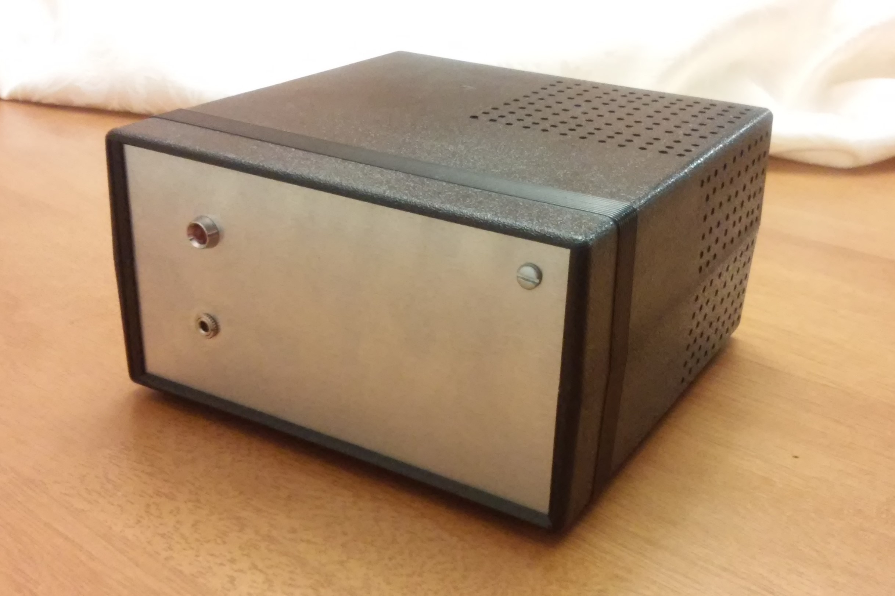
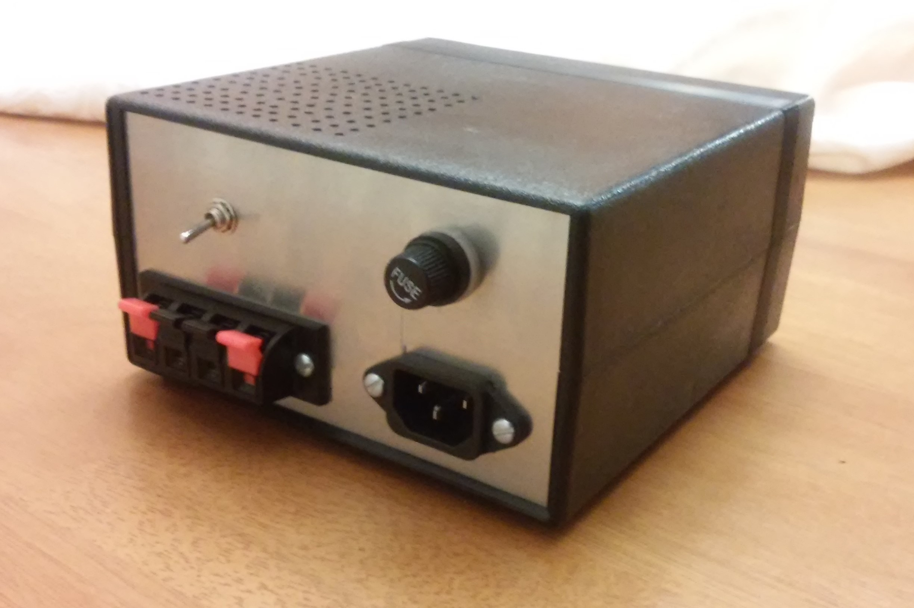
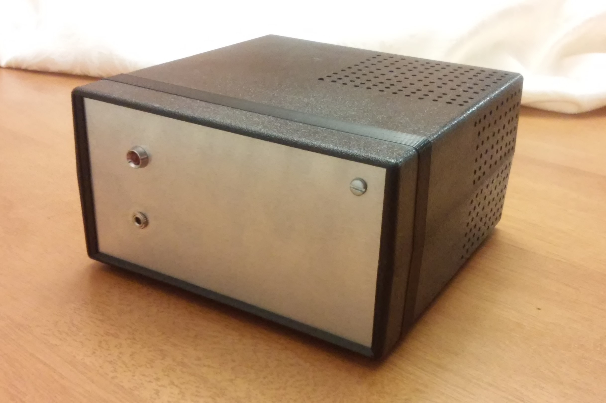
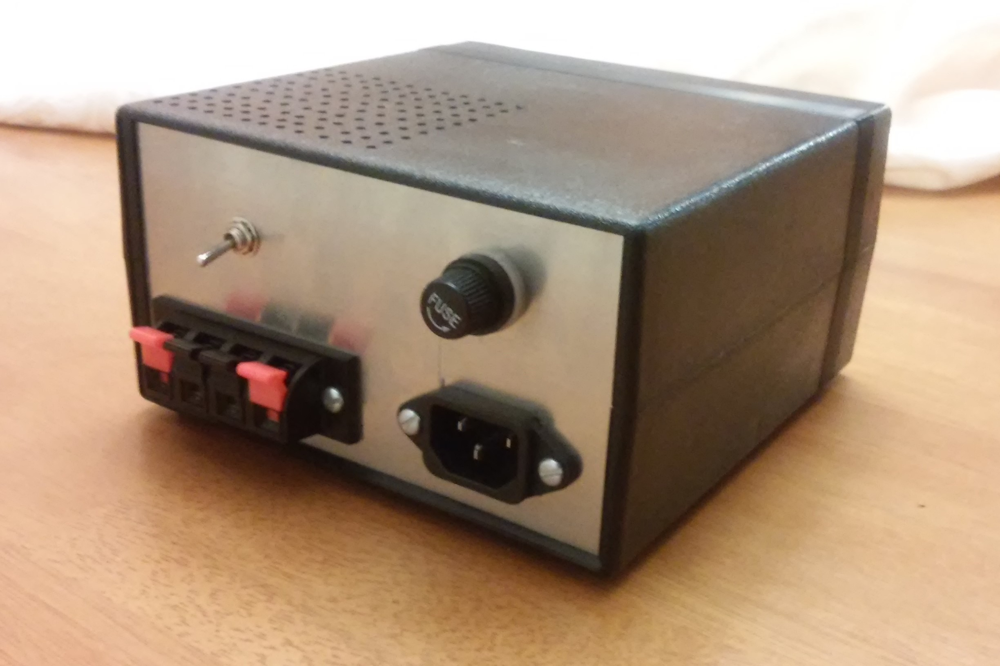

Audio Amplifier
Working on the amplifier was interesting because I got to revisit a lot of familiar situations from the past. Much of the process was similar to working on the variable power supply during my junior year. In some ways, that made this project easier. For example, I now had some more experience with parts like the transformer and the ac plug. I had also worked with the same project box so working on that part went much more smoothly this time around. However, some of the challenges I faced with my variable power supply were also present while working on the amplifier. The best example of this was trying to get the milling machine to mill a usable printed circuit board. The combination of having both a power supply and an amplifier circuit in the project box provided some additional challenges in planning the layout of the project.


 


